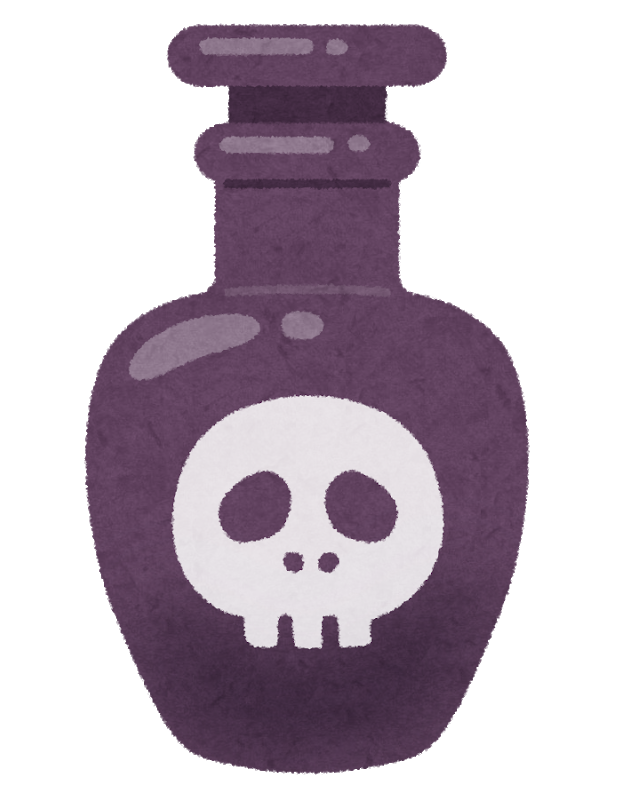
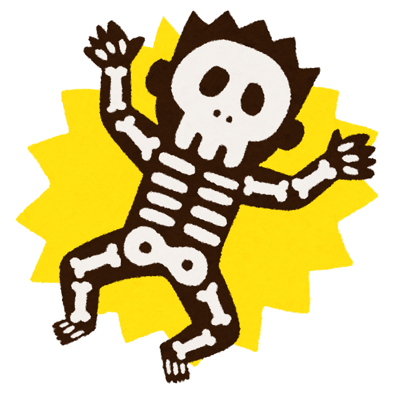
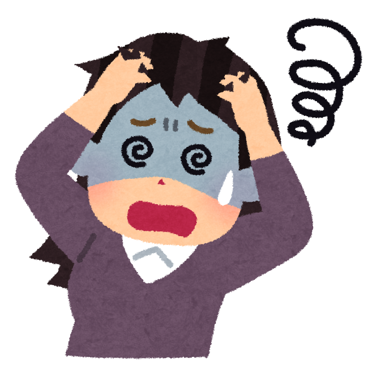

POKECA FIELD Field 0 0 0 0 0 0 Status    Coins: 0 1 2 3 4 5 どく どく状態にしますか？ やけど やけど状態にしますか？ ねむり ねむり状態にしますか？ マヒ マヒ状態にしますか？ こんらん こんらん状態にしますか？ ねむり ねむり・マヒ・こんらんの特殊状態は重なりません。 特殊状態をねむりへ変更しますか？ マヒ ねむり・マヒ・こんらんの特殊状態は重なりません。 特殊状態をマヒへ変更しますか？ こんらん ねむり・マヒ・こんらんの状特殊態は重なりません。 特殊状態をこんらんへ変更しますか？ どく状態 どくマーカーをカードにのせる。 ポケモンチェックのたびに「10」のダメカンを1個のせる。 ワザ 使える にげる できる ベンチに戻る、進化する。 ポケモンのワザや特性、トレーナーズで、特殊状態を回復させる効果のあるものを使う。 やけど状態 やけどマーカーをカードにのせる。 ポケモンチェックのたびに「10」のダメカンを2個のせる。 そのあと、コインを投げて、オモテならそのポケモンは「やけど」から回復する。 ワザ 使える にげる できる ベンチに戻る、進化する。 ポケモンのワザや特性、トレーナーズで、特殊状態を回復させる効果のあるものを使う。 ポケモンチェックごとにコインを投げてオモテなら回復する。 ねむり状態 カードを横にする。※左右どちらでもかまわない。 「ねむり」のポケモンは、自分の番、ワザと「にげる」が使えなくなる。 ワザ 使えない にげる できない ベンチに戻る、進化する。 ポケモンのワザや特性、トレーナーズで、特殊状態を回復させる効果のあるものを使う。 ポケモンチェックごとにコインを投げてオモテなら回復する。 マヒ状態 カードを横にする。※左右どちらでもかまわない。 「マヒ」になったポケモンは、そのあとの自分の番、ワザと「にげる」が使えなくなる。 ワザ 使えない にげる できない ベンチに戻る、進化する。 ポケモンのワザや特性、トレーナーズで、特殊状態を回復させる効果のあるものを使う。 自分の番を1回すごしたあとのポケモンチェックで回復する。 こんらん状態 カードを上下さかさまにする。 使うワザを決めたら、持ち主はコインを投げる。 オモテならそのワザを使えるが、ウラだとワザは失敗して、ワザを使ったポケモン自身に「10」のダメカンを3個のせる。 にげる できない ベンチに戻る、進化する。 ポケモンのワザや特性、トレーナーズで、特殊状態を回復させる効果のあるものを使う。